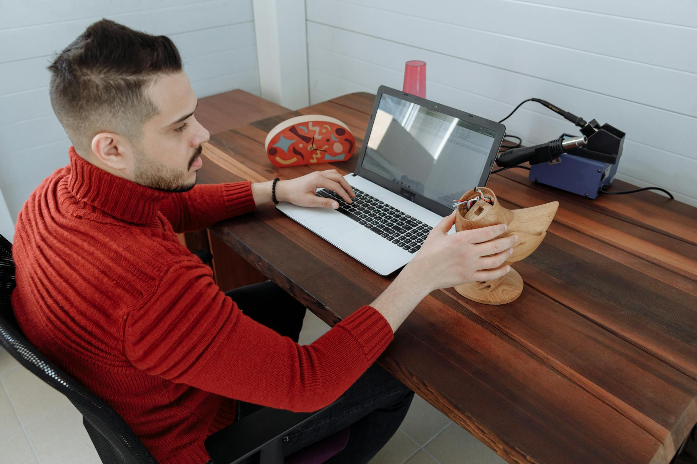

Tekniker på plats när driften inte kan vänta.
Vi levererar IT-drift, support och installation där utrustningen faktiskt står. Dels som förlängd arm till större IT-bolag som behöver kapacitet i södra Sverige, dels direkt till verksamheter som vill ha en tekniker som känner deras miljö. Teknikerna är anställda hos oss och säkerhetsprövas enligt kundens krav.

Egna anställda
Vi skickar inte vidare uppdrag till okända underleverantörer. Teknikerna som kommer ut är anställda hos Driftiq.
Säkerhetsprövning
Bakgrundskontroll och registerkontroll enligt kundens krav, dokumenterat per uppdrag och person.
ITIL-baserat arbetssätt
Incidenter, problem och förändringar hanteras i era processer och i ert ärendesystem, inte i vårt.
Bas i Skåne
Öresundsregionen är närområdet. Uppdrag längre bort planeras och bemannas per överenskommelse.
Från januari 2026 räcker det inte att veta vad en leverantör gör. Ni behöver veta vem som står i rummet.
Cybersäkerhetslagen (2025:1506) trädde i kraft den 15 januari 2026 och tar in NIS2 i svensk rätt. Den tydligaste förändringen handlar inte om brandväggar utan om leveranskedjan. Verksamheter som omfattas ska kunna redogöra för säkerheten hos sina leverantörer, och hos leverantörernas leverantörer.
För finanssektorn kom kravet tidigare. DORA gäller sedan den 17 januari 2025 och sträcker sig till tredjepartsleverantörer av IKT-tjänster, med krav på ett register över varje underleverantör som rör kritisk verksamhet. Den som säljer in kapacitet i de kedjorna behöver kunna dokumenteras, inte bara upphandlas.
Samtidigt är arbetskraften den knapphet som styr prisbilden. Inom IT uppger 83 procent av arbetsgivarna att de har svårt att hitta rätt kompetens, näst högst av alla sektorer i Sverige, och drifttekniker klassas som bristyrke.
Den fysiska delen av IT försvann inte när molnet kom. Windows 10 nådde end of life den 14 oktober 2025 och utlöste en våg av klientbyten. Hybrid är normen snarare än undantaget, vilket håller kvar hårdvara i egna lokaler. Och datacenterutbyggnaden i Norden fortsätter, med Staffanstorp som en av noderna i Microsofts svenska investering.
Det är i det gapet Driftiq finns. Någon behöver stå framför racket, och det ska gå att visa vem det var.
Källor: cybersäkerhetslagen (2025:1506) · förordning (EU) 2022/2554 (DORA) · ManpowerGroup Talent Shortage · Arbetsförmedlingens Yrkesbarometer · Microsoft, juni 2024.
Två sätt att arbeta med oss.
Behovet ser olika ut beroende på om ni säljer IT vidare eller använder den själva. Vi håller de två spåren isär, i pris, i avtal och i hur vi uppträder mot er kund.
Kapacitet ni kan sätta i eget namn
Ni har avtalet, kundrelationen och servicenivån att svara för. Vi har teknikerna i Öresund. Vi går in som underleverantör på era villkor, arbetar i er dokumentation och uppträder som er leverans när kunden kräver det. Vi konkurrerar inte om er slutkund.
- Fältservice
- On-site-support och bemanning per pass, vecka eller löpande.
- Utrullning
- Installation, hårdvarubyten och migrering med planerad överlämning.
- Datacenter
- Smart hands, kabling och hårdvarulivscykel i anläggningar i regionen.
- Beredskap
- Jour och förhöjd tillgänglighet enligt vad vi avtalar med er.
En tekniker som känner era lokaler
Industri, fastighet, logistik och life science har en sak gemensamt. IT sitter i byggnaden, inte bara i webbläsaren. Vi tar löpande drift, support och installationer med samma personer varje gång, så att ni slipper förklara er miljö från början vid varje ärende.
- Löpande drift
- Användarsupport och driftuppgifter på plats, med avtalad närvaro.
- Infrastruktur
- Nätverk, klienter och kringutrustning i era egna lokaler.
- OT-nära system
- Uppkopplade lås, access och utrustning som sitter i verksamheten.
- Livscykel
- Klientutrullning, byten och avveckling av hårdvara.
Det vi levererar, och hur långt det räcker.
Fem områden som hänger ihop i praktiken. Det sjätte, mötesbokning och kunddialog, är ett eget affärsområde och beskrivs separat.
On-site-support och fältservice
Erfarna tekniker på plats, för enstaka ärenden eller löpande bemanning. Samma personer över tid, så att kunskapen om miljön stannar kvar hos er i stället för att börja om.
Installation, utrullning och migrering
Klientutrullning, hårdvarubyten, kabling och flyttar. Planerat innan, dokumenterat under vägen, avslutat med en överlämning någon annan kan läsa.
AI-stödd felanalys och fjärrdiagnostik
Vi använder AI och fjärrdiagnostik för att hitta grundorsaken tidigare och lösa mer utan att någon behöver resa. Det som ändå kräver en människa på plats får en människa på plats.
Data och uppföljning
Uppföljning på uppdragsnivå: ledtider, återkommande fel och var timmarna faktiskt går. Underlag ni kan lyfta rakt in i er egen rapportering.
Säkerhet och efterlevnad
Bakgrundskontroll och registerkontroll enligt kundens krav, avgränsade behörigheter och dokumentation som håller när er kund gör leverantörsgranskning.
Hela kapaciteten i detalj
Kompetensområden, avgränsningar och vad vi avstår från att ta oss an.
Till kapacitetFyra steg, och ett tydligt nej när det behövs.
-
01
Avgränsning
Vi går igenom omfattning, platser, säkerhetskrav och svarstider innan vi lämnar pris. Ett uppdrag vi inte kan bemanna med rätt person säger vi nej till, hellre det än att lösa det med någon annans folk.
-
02
Bemanning
Ni får namngivna tekniker, inte en pool. Bakgrundskontroll och eventuell registerkontroll är klar innan första passet, och ni får underlaget.
-
03
Leverans
Arbetet följer era processer och er ärendehantering. Vi dokumenterar per besök så att spåret finns kvar hos er även den dag vi inte längre är kvar.
-
04
Uppföljning
Genomgång av ledtider och avvikelser med bestämt intervall. Vi tar upp det som inte fungerade utan att ni ska behöva fråga.
Den som köper in händer köper in en risk. Vårt jobb är att göra den mätbar.
En tekniker som kommer in i ett serverrum, en produktionslinje eller ett låssystem har mer tillgång än de flesta konton ni granskar. Därför behandlar vi personen som en del av leveransen och inte som en resurs som råkade vara tillgänglig.
I praktiken betyder det bakgrundskontroll och registerkontroll i den omfattning uppdraget kräver, dokumenterat per person. Avgränsade behörigheter som upphör när uppdraget gör det. Och en loggföring per besök som ni kan lämna vidare när er egen kund frågar vem som var där och varför.
Vi är inte certifierade mot ISO 27001 i dag och påstår inte annat. Arbetssättet är byggt så att en certifiering ska kunna läggas ovanpå det vi redan gör, inte tvärtom.
Ett litet bolag med lång erfarenhet i rummet.
Driftiq är nystartat. Det betyder att vi inte har tio års leveranshistorik att visa, och vi låtsas inte om något annat. Vad vi har är grundare som tillsammans lagt över trettio år i svensk IT-drift och IT-försäljning, och som vet skillnaden mellan ett uppdrag som ser bra ut på papper och ett som går att bemanna på tisdag.
Vi bygger bolaget i den ordning som håller: rätt personer först, dokumentation från dag ett, och referenser vi faktiskt har levererat innan vi hänvisar till dem.
